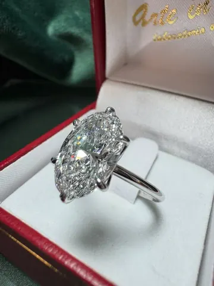

Scegliamo la pietra insieme
Taglio, purezza e colore si valutano con calma, pietra alla mano, guardandola alla luce. Ti spieghiamo le differenze e troviamo quella giusta per te e per il tuo budget: ovale, tonda, a goccia, oppure una pietra colorata.
Laboratorio orafo · Piazza Duomo 47, Voghera
Il solitario perfetto non si trova per caso in vetrina: si costruisce attorno a una pietra, a una mano e a una storia. Nel nostro laboratorio di Piazza Duomo lo disegniamo con te e lo realizziamo a mano.

Taglio, purezza e colore si valutano con calma, pietra alla mano, guardandola alla luce. Ti spieghiamo le differenze e troviamo quella giusta per te e per il tuo budget: ovale, tonda, a goccia, oppure una pietra colorata.
Griffe, galleria, spessore della fascia: ogni dettaglio si decide attorno alla pietra e alla mano di chi lo indosserà, perché l’anello sia comodo ogni giorno e non solo bello il giorno della proposta. Lavoriamo oro giallo, bianco e rosa.
All’interno della fascia possiamo incidere un nome, una data, una frase, una foto o un’impronta digitale. È la parte più personale del gioiello, e lo rende impossibile da copiare.
Domande frequenti
Dipende dal modello e dalla pietra: te lo diciamo al primo incontro, insieme ai costi, prima di iniziare. Se hai una data precisa per la proposta, dicci subito quando.
Certo: una foto, un disegno o anche solo un’emozione. Partiamo da lì per il bozzetto.
Sì, possiamo riutilizzare pietre e oro di un gioiello di famiglia in un anello nuovo. Portalo in laboratorio e valutiamo insieme.
Siamo in Piazza Duomo 47 a Voghera, dal martedì al sabato. Chiamaci per fissare un appuntamento: ti dedichiamo tutto il tempo che serve.